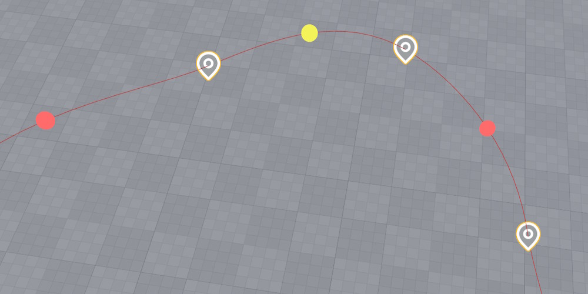
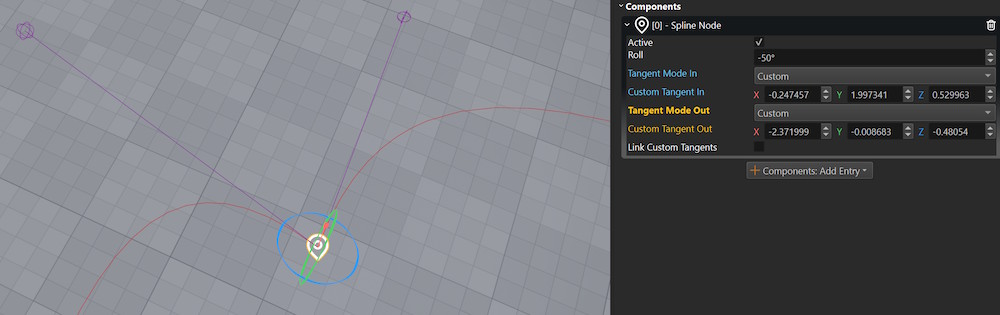

Spline Component
The spline component defines smooth curves in 3D space using cubic Bezier curves. Other components, such as the follow path component can use splines to animate objects, and scripts can sample spline data for custom logic.
How to Configure a Spline
Add a game object and attach a spline component to it.
Add several game objects as child objects (at least two).
Attach a spline node component to each child object.
Give each child object a different name. It is easiest to just give them numbers in the order in which you want them to be used in the spline.

Add those names in the desired order to the Nodes property of the spline component.

Position the child objects in the world to form a spline. Enable the
Visualize Splineflag to see a preview of the curve.
Editing Tips
When editing a spline you often need to select the child path nodes and then go back to the spline object. Ctrl+Q selects the parent object of the currently selected object, which is very useful here. Also Ctrl+B changes to the previous selection, which can also be used to undo a selection change.
Adding Points Interactively
When the Edit Nodes manipulator is active, small gizmos appear on each spline segment. Click on a segment gizmo to insert a new spline node at that position. The editor automatically creates a child game object with a spline node component, gives it a proper name and adds it to the nodes list.

To re-enable manipulator mode after translating an object, press Q or click on the Edit Nodes property again.
Editing Tangents
Each spline node can have its tangent mode set to Auto, Linear or Custom:
- Auto: Tangents are computed automatically for smooth curvature.
- Linear: Creates a sharp corner at the node with no curvature.
- Custom: You can manually adjust the tangent direction and length using rotate and scale gizmos.
When using custom tangents, enable Link Custom Tangents to make the incoming and outgoing tangents mirror each other, creating a smooth transition through the point.

Spline Features
Splines support interpolation of:
- Position: Smooth cubic Bezier curve between nodes.
- Rotation: Including a roll angle at each node.
- Scale: Scale values can vary along the spline.
- Up Direction: Computed from the roll angle for proper orientation.
What to do with a Spline
A spline component by itself has no functionality other than to define a shape. These component types can utilize splines:
Scripting with Splines
Visual scripts and C++ code can sample spline data using these functions:
GetPositionAtDistance(distance, space): Get position at a distance along the spline.GetTransformAtDistance(distance, space): Get full transform including rotation and scale.GetTotalLength(): Get the total length of the spline.FindKeyClosestToPoint(point, space): Find the closest point on the spline to a given position.
The space parameter can be Local (relative to the spline) or Global (world space).
See the ScatterOnSpline sample script in the Testing Chambers project for an example of spawning objects along a spline.
Component Properties
Flags: Preview flags for the spline. Options include Visualize Spline, Visualize Up Dir, and Visualize Tangents.Closed: Whether the spline should loop back to the first node.Nodes: This array references all nodes by name or object path. Non-existing names are ignored.
Also see the spline node component for options on each node.